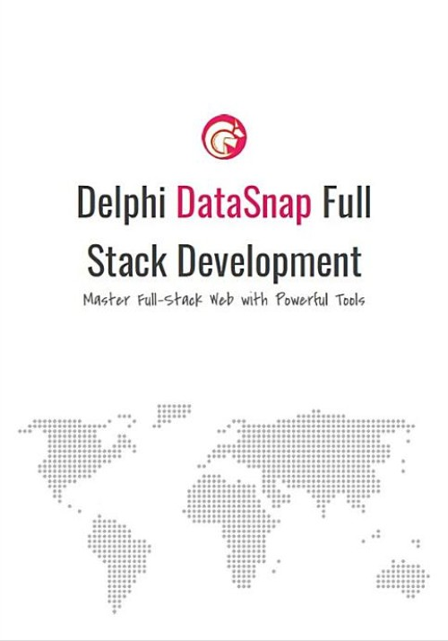

Delphi DataSnap Full Stack Development
Writed by : Eden Wu
Published date : 05/2023
ISBN-10 : 9869530044
ISBN-13 : 9789869530040
Language :  English
English
About Delphi DataSnap Full Stack Development
Unlock Your Web Development Skills from 0 to 1: Master Backend Knowledge and Learn Frontend Development Tricks
Delphi Advanced Framework – A comprehensive guide to building DataSnap projects, suitable for beginners and those interested in Delphi development.
Discover practical jQuery EasyUI and Sencha ExtJS frontend libraries, along with implementing AJAX operations in DataSnap.
Introduction to basic SQL Server database operations such as CRUD and how to apply them in real projects.
Learn the basics of Delphi syntax, commonly used components, and how to integrate frontend and backend technologies.
Who this book is for:
★ Those who have some experience with JavaScript but don't know how to start learning backend skills
★ Those who have used Delphi but don't want to start from scratch
★ Those who struggle with writing Delphi programs
★ Those who want to develop full-stack projects using DataSnap
Features of this book:
1. The book adopts a progressive approach to developing a full-stack web application for a backend management system, allowing learners to get started immediately.
2. All the code in the book is presented without any omissions, with key points excerpted and explained to strengthen understanding and retention.
3. Provides illustrations of framework principles, helping readers focus on learning the key points.
4. Practical projects can be applied directly in real-world scenarios, achieving accelerated learning outcomes.
This book also provides a detailed analysis of common Delphi syntax, DataSnap framework implementation, and Delphi database connection components - dbExpress. Readers will learn how to develop an enterprise-level employee management system and practical case study - Aquatic World System.
The final part of the book teaches you how to implement an EasyUI employee management system using the ExtJS framework, as well as optimizing the performance of the DataSnap server. In addition, an appendix on Cross-Origin Resource Sharing (CORS) is provided.
This book will solve the pain points of Delphi DataSnap full-stack web development, allowing you to quickly master the relevant skills and become an expert in web development.
Where to buy ?
This book has the ISBN13 "9789869530040".
If it is still available for sale, you can order it in your favorite bookstore, by its publisher or online at
Amazon CA,
Amazon FR,
Amazon JP,
Amazon UK or
Amazon USA depending on your country.
Table of content
Book Information 2
Copyright Notice 7
Endorsements by Friends in the Delphi Community 8
Foreword 12
I'm native, I'm proud 12
Trend Impact 12
Common Issues 13
Technical Integration 14
Content Structure 15
Achieving Better 15
Full Book Example Link 16
Building Full-Stack Services from 0 to 1 17
Web Application Architecture of This Book 17
Getting to know the Delphi development tool 17
Starting Your First DataSnap Project 21
First execution 29
Code explanation 31
Building jQuery EasyUI Operating Environment 43
Updates are required for projects when using Delphi XE (2011) 47
Introduction to commonly used EasyUI components 50
Parser 51
SearchBox 53
Progressbar 57
Tooltip 60
Panel 64
Tabs 70
Accordion 78
Layout 83
LinkButton 88
Form 92
ValidateBox 96
ComboBox 100
DateBox 105
Window 109
Dialog 113
Messager 117
DataGrid 120
AJAX Application in DataSnap 126
What is AJAX? 126
Using VanillaJS with DataSnap 132
Introduction to DataSnap REST Message Passing Protocol 135
Using jQuery with DataSnap 137
JavaScript API provided by DataSnap 140
Delphi common syntax 142
Naming Rules 142
Variable Declaration 142
Methods (procedure and function) 143
String Processing 144
Numeric Processing 148
Operator Symbols 149
Flow Statements 156
Containers 161
DataSnap Framework 170
Introduction to Delphi Web Architecture 170
Unicode Support 173
Creating a database 175
DataSnap REST Architecture 177
DataSnap API and URI Mapping 179
Request Process and Session Management 179
DataSnap REST Server Authentication Mechanism 180
DataSnap State Management and Stateless Protocol Design 183
JSON Parsing 194
Delphi Database Connectivity Component - dbExpress 199
What is dbExpress? 199
Component Access Layer - TSQLConnection 200
Driver layer - TDBXConnection 207
DBX Convert to JSON 213
DataSnap Development Practices and Techniques 236
Login and Main Pages Creation 236
In-Depth Implementation: Developing an Employee Management System for Enterprises 262
Practical Case: Aquarium World System Creation 294
Front-end Concept 294
Code Explanation 297
About Detail View 301
Summary 311
Implementing an EasyUI Employee Management System with the ExtJS Framework 312
Introduction 312
Preparing for ExtJS Rewriting 314
Construct the Homepage First 315
Application entry point 318
Login screen implementation – First experience with MVVM 325
Design for successful login 332
Return the login status to the main app screen 335
Dynamic Tab Opening Method 338
Employee Management Frontend Implementation 340
Create Model 340
Create Grid View 341
Create ViewModel 344
Create ViewController 347
Employee Management Backend Implementation 352
Create 352
Read 353
Update 355
Delete 356
Challenges encountered 357
Conclusion 358
Optimizing DataSnap Server Performance 360
Thread Pooling 360
Reduce unnecessary file creation attempts 361
Deploy the service in ISAPI DLL mode 362
Appendix 371
Cross-Origin Resource Sharing (CORS) 371
Link to source code for all examples in this book: 374